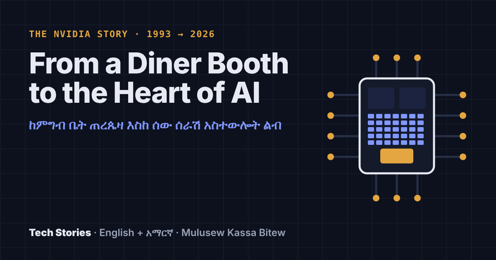

13 Nov 2026 · Chips, AI, Nvidia
From a Diner Booth to the Heart of AI
ከምግብ ቤት ጠረጴዛ እስከ ሰው ሰራሽ አስተውሎት ልብ
How computer chips work, how Jensen Huang built Nvidia, and how his story reached November 2026.
Read the story →English · አማርኛ
Stories about technology and science, explained simply, in English and Amharic.
ስለ ቴክኖሎጂ እና ሳይንስ በቀላሉ የተብራሩ ታሪኮች፣ በእንግሊዝኛ እና በአማርኛ።

How computer chips work, how Jensen Huang built Nvidia, and how his story reached November 2026.
Read the story →